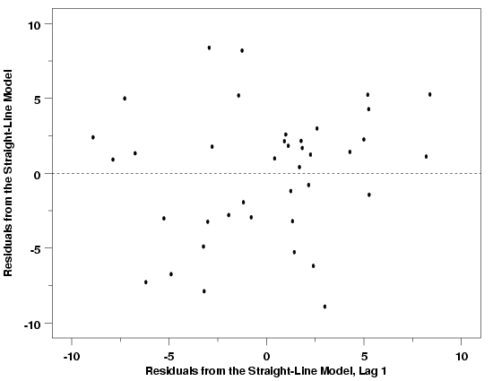
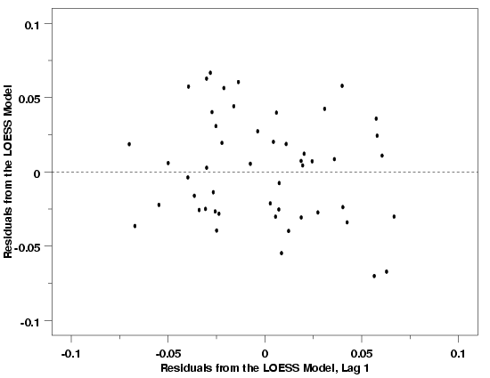
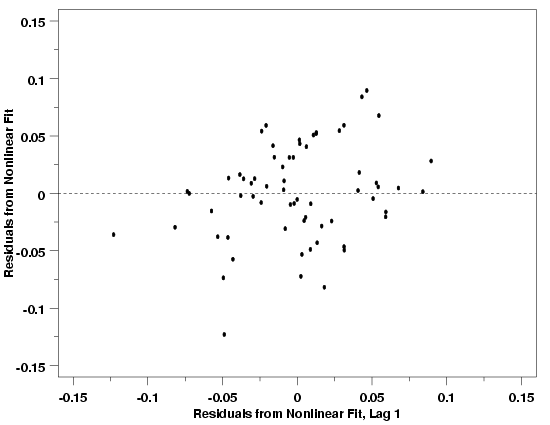

|
4.
Process Modeling
4.4. Data Analysis for Process Modeling 4.4.4. How can I tell if a model fits my data?
|
|||
| Lag Plot Shows Dependence Between Residuals | The lag plot of the residuals, another special type of scatter plot, suggests whether or not the errors are independent. If the errors are not independent, then the estimate of the error standard deviation will be biased, potentially leading to improper inferences about the process. The lag plot works by plotting each residual value versus the value of the successive residual (in chronological order of observation). The first residual is plotted versus the second, the second versus the third, etc. Because of the way the residuals are paired, there will be one less point on this plot than on most other types of residual plots. | ||
| Interpretation | If the errors are independent, there should be no pattern or structure in the lag plot. In this case the points will appear to be randomly scattered across the plot in a scattershot fashion. If there is significant dependence between errors, however, some sort of deterministic pattern will likely be evident. | ||
| Examples | Lag plots for the Pressure/Temperature example, the Thermocouple Calibration example, and the Polymer Relaxation example are shown below. The lag plots for these three examples suggest that the errors from each fit are independent. In each case, the residuals are randomly scattered about the origin with no apparent structure. The last plot, for the Polymer Relaxation data, shows an apparent slight correlation between the residuals and the lagged residuals, but experience suggests that this could easily be due to random error and is not likely to be a real issue. In fact, the lag plot can also emphasize outlying observations and a few of the larger residuals (in absolute terms) may be pulling our eyes unduly. The normal probability plot, which is also good at identifying outliers, will be discussed next, and will shed further light on any unusual points in the data set. | ||
| Lag Plot: Temperature / Pressure Example |  | ||
| Lag Plot: Thermocouple Calibration Example |  | ||
| Lag Plot: Polymer Relaxation Example |  | ||
| Next Steps | Some of the different patterns that might be found in the residuals when the errors are not independent are illustrated in the general discussion of the lag plot. If the residuals are not random, then time series methods might be required to fully model the data. Some time series basics are given in Section 4 of the chapter on Process Monitoring. Before jumping to conclusions about the need for time series methods, however, be sure that a run order plot does not show any trends, or other structure, in the data. If there is a trend in the run order plot, whether caused by drift or by the use of the wrong functional form, the source of the structure shown in the run order plot will also induce structure in the lag plot. Structure induced in the lag plot in this way does not necessarily indicate dependence in successive random errors. The lag plot can only be interpreted clearly after accounting for any structure in the run order plot. | ||

{kind=link}
{kind=link}
{kind=link}